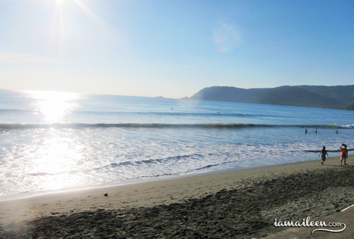

BLOG LIST

SURFING IN BALER | HERE’S TO THE SUMMER!
By Aileen Adalid / September 11, 2014 /
I was born and raised in an island so it’s an irony that I don’t know how to swim… I simply survived my island life by staying on the beach or by staying in the shallow areas of the ocean. At one point, I think I’ve even actually feared the sea! (That is due mainly to numerous near-drowning experiences. LOL) And I guess, I still fear those deep blue bodies of water.
…So does that mean that I’m technically not an island girl then? Haha!
But anyway, despite being a non-swimmer, I’m an adrenaline junkie, so I certainly won’t let myself reach the age of 21 without facing my fears! And luckily, back in May 26, 2012, some of my friends from work invited me to go surfing in Baler and heck, I didn’t say no to that!
This was actually my first experience in surfing! To sum it up in one cliché but truthful word: EPIC.
WHERE IS BALER? Baler is the capital of the municipality of the Aurora province; it’s roughly 230 kilometers away from Manila and the travel time by land takes around 7 hours or more (or less if you’re lucky on the road). This is said to be the birthplace of surfing here in the Philippines and sure enough, there are a lot of prime spots for surfers to enjoy.
Beginners can go for Sabang Beach, while the pro-surfers should check out Cemento’s Cobra Reef and Charlie’s Point. There’s also Linda’s Point, and another unnamed great spot at the mouth of the Baler River.
FRIDAYWe availed the trip package from Travel Factor, and our schedule for this trip was that at 11:30PM, we’d all have to meet at Ortigas and then depart for Baler. My companions and I decided to meet up after work so we could all travel to Ortigas altogether.
Lucky ol’ me, I had to do overtime. (Boo!) But by 8PM I was done. I met up with Rea and Alvin at Kuppa—where by coincidence, I saw my boss in the table next to us. Haha! Anyway, we hung out and played cards while we waited for 10PM to come. (Technically, only the two of them were playing cards. I don’t know shit about cards. A lot of people have tried to teach me over the years, but I just don’t have the patience to really absorb it all.)
We finally traveled to Ortigas and met up with Brylle, our other companion for the trip. We then met the Travel Factor team as we were given our kits which included a cool Forever Summer shirt, bag tag, breakfast stub, and 2 stubs for free beer.
SATURDAYA little after midnight, we left Manila and finally ventured off to Baler… Now at this point, let me just say that I totally blacked out. Totally. I slept like a big baby, that not even the twisting roads of the Sierra Madre mountain range woke me up! Rea even had to do the grueling task of constantly pushing my head just so I could go back to an upright position as I sleep!
Naturally, I was all groggy that morning, but the moment that I stepped out of the bus, I caught the familiar scent of the sea! And boy… it was all nostalgia from then on!
We walked over to the open area of Aliya to take a glimpse of the beach and… it was so exhilarating! I mean… I felt like I was back in Batanes! But the difference was that, of course, the waves in Baler’s beach are way more powerful and higher; and yes, it’s technically NOT Batanes. Haha, but I think that the fact that it’s the province just made me miss my province. But anyway. Speaking of the ‘beach’, we were at Sabang Beach for this trip, which is perfect for us beginners.
As for the Aliya Surf Camp, the place was small but neat! Apparently, there aren’t grand resorts nor hotels in the area, only small and simple inns for visitors like us. (Calling all entrepreneurs!)
I remember one of my friends telling me how surfing uses a lot of ‘push-up’ movements, and at first I didn’t believe him. But, damn…… I believe him now! HAHA! It really uses a lot of arm power and tests your balance too!
SUNDAYWe woke up at 9AM, and what else to do after breakfast at Aliya’s other than to go surfing??? Haha! Sander was my instructor again for the day and he tried to make me do my own paddling, and at some times, left me to my own devices so I could try balancing on my own.
The funny thing is, on this day, I mostly get wiped out! At one instance, I was TOTALLY wiped out that my feet was in the air! HAHAHAHA! This was when Sander wanted me to try this big wave and as per usual, I failed miserably. Sander even jokingly said, “Yesterday, you were better!” To which I replied, “I’m too tired!”
And I was! I really was! I woke up with sore arms, ribs, and knees! And it was torture… but I couldn’t say no to another round of surfing! I just wouldn’t!
We ended at about noon, and by this time, I started to notice how my legs and arms were starting to get really red. Minutes passed and it started to get itchy and it stung so bad! Our bus was going to fetch us at 3PM, so after taking lunch, I took a shower, and immediately applied lotion to the sore areas on my body—man, it was soothing, but it was still hurting! So much for my sunblock!
So as of now, I am sooooo brown. But there’s no helping it! Haha!
Overall, all I can say is that I could get used to surfing! We’re definitely going back, that’s for sure! (Especially since we didn’t have the chance to visit the other famous spots in Baler like the Balete Tree, etc. etc.) But not too soon though; I need to give my body and skin a much needed break. Haha! Nonetheless, I can’t wait!!!
Baler, I shall see you again!
GOING BEYOND THE WHITE WATER
by Sam · in Stories, Surf Anxiety, Surf Technique
Getting out the back
— beyond the white water — isn’t something to shy away from. The first few times you try surfing, you’ll be directed to the broken waves by your conscientious surf coach. After that, it’s time to get out there.
You’ve been surfing a handful of times. Aside from that lucky day you found a small wave and had a cruisey few hours, you’re mostly used to dragging your board through the white water. Half the time you’re leaning into the rushing waves, getting whacked time and again, trying your best to remember the basics.
But when you get out the back, there’s a serenity. The “connection to the sea” and “aloha” spirit you hear people touting comes from the calm waters beyond the breakers. You’ll have to deal with bigger waves, and spend some time learning how to handle yourself, but the lulls between waves are worth the challenge.
You’re already ready to goThere’s a danger to waiting for the perfect moment or building up enough confidence when it comes to this part of surfing.
Pick a smaller day — you shouldn’t be out in conditions you’re uncomfortable — smaller waves aren’t going to hurt. You’ll get moved around, might take a knock or two and spend a lot of time getting used to being out of reaching distance to the bottom. But it’s worth it.
Spend some time sat on your board, get used to the feeling and when you’ve found your balance, enjoy the sensation.

SURFING SIARGAO: Ocean Ecstasy In The Philippines
By Matthew Karsten
Welcome to Siargao, a tropical island paradise known for its surfing in the Pearl of the Orient Seas. Its just one small island among the 7000 that make up the Philippines.
Yet Siargao boasts a unique mix of excellent surfing, relaxed vibes, deserted beaches, warm water, and a practically unlimited supply of fresh coconuts.
If you’re a surfer, or want to learn, you really need to visit Siargao.I spent 3 weeks exploring this little slice of heaven and didn’t want to leave. That’s how incredible the island is!
Siargao Island ParadiseWhere is Siargao Island? It’s located in the South East of the country. They have a small airport that you can fly into from Cebu, or another option is the 3 hour ferry from the city of Surigao (careful, SURIGAO and SIARGAO sound similar but are different places!).
I flew from Cebu to Siargao Island in a small plane via Cebu Pacific Airways. Once there, it’s easy to jump on a shuttle to General Luna, the island’s main surf-town.
The 40 minute drive provides a glimpse at life on this island as you pass simple thatched roofed homes on stilts, rice fields, lush tropical forests, barefoot children and large carabao (water buffalo) on the side of the road.